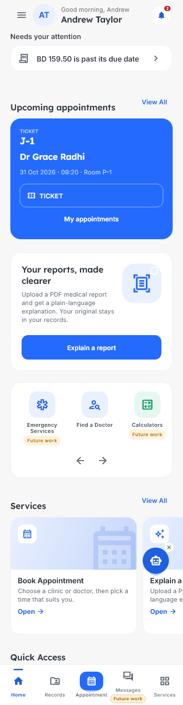

For patients
Your health, easier to manage.
Keep your records close, find a clinician, book a visit, and stay connected with your care team.
Explore this solutionHealth records, appointments, and the people who care for you — brought together in one easy-to-use place.
Built in Bahrain English & Arabic Designed around you

Different people. Different needs. One shared goal: make the next step in care easier.
For patients
Keep your records close, find a clinician, book a visit, and stay connected with your care team.
Explore this solutionFor care teams
Bring schedules, patient charts, consultations, and everyday clinical work into a connected workspace.
Explore this solutionFor administrators
Organize staff, departments, appointments, billing, and the work that keeps a clinic running.
Explore this solution
Bring your medical information together so the details you need are easier to find, follow, and discuss.
Discover all featuresmyhealth keeps the important parts of your care within reach.
Explore clinicians and choose an available appointment that works for you.
Find your health records, documents, and visit information in your account.
Use care-team messages and report support to understand what comes next.
From booking a visit to understanding a report, see how myhealth fits into everyday care.
A guided look at the app is on its way.
You can explore the live demo today.
Take a look inside myhealth and explore it for yourself.